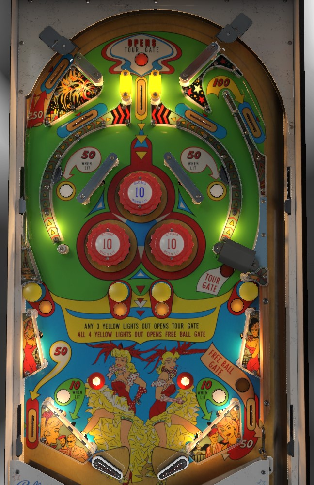

Grand Tour is the replay version. Happy Tour is the add-a-ball version. Differences between the two versions are minor and explained where relevant.
If the left flipper is strong enough to get the ball through the open Tour Gate on the right, all the way up that lane, and around the hairpin at the top, doing so should be your focus. Plunge the center top lane to instantly open the gate, then make a full shot to the gate to score a 100-point Tour and a replunge: rinse and repeat. If the left flipper is not strong enough to score a Tour, there is little scoring available to you other than trying to get the ball stuck in the three pop bumpers and take advantage whenever they are lit for 10 points.
There are 3 lanes that the ball can go down on the plunge. All 3 score 10 points. The left and right top lanes feed the ball to the flippers down the orbits; since the right orbit has the Tour Gate, it will deflect the ball slightly, and balls coming down both orbits tend to end up on the left flipper. The center top lane instantly opens the Tour Gate and feeds the ball into the pop bumpers.
The ball can always come down the right orbit whether the Tour Gate is open or not, but it can only go up the right orbit if the Tour Gate is open. Open the Tour Gate by plunging the center top lane, or hitting at least 3 of the yellow mushroom bumpers to unlight them. When the Tour Gate is open, shoot it strongly to send a ball up the right orbit and around the hairpin at the top, which puts the ball back into the shooter lane for a replunge. Successfully doing so scores 100 points and a Tour, which lights one photo on the backglass and resets the mushroom bumper lights.
On Grand Tour, the lit photos are a carryover award the extends across games, and lighting the 10th photo scores 3 replays. On Happy Tour, extra balls are awarded instead; I do not know the exact rule, but I would expect an extra ball to be awarded every 2 or 3 Tours.
Scores 50 points and returns the ball to the top lanes.
Only scores points when lit. Making the inner loop in either direction scores 50 points when lit and unlights it. This inner loop seems to only be lit at the start of some balls.
Bumpers and slingshots score 1 point, or 10 points when lit. They are lit seemingly randomly, with their states changing based on 1-point switch hits. There is a hidden dynamic difficulty adjustment in the game that decreases slightly each time a new game begins and increases noticably every time a free game is scored. The higher this difficulty setting is, the less frequently bumpers or slingshots will be intermittently lit. If the bumpers are lit frequently and the flippers are not strong enough to get the ball all the way up the orbits, rattling around the pop bumpers is the fastest way to score points.
At the start of a ball, all 4 mushroom bumpers are lit. Hit a lit bumper to unlight it. Hitting a mushroom bumper scores 1 point, whether it is lit or not. If at least 3 mushroom bumpers are unlit, the Tour Gate in the right orbit will be open. (If the Tour Gate was already open thanks to the center top lane, nothing happens when 3 mushroom bumpers are unlit.) If all 4 mushroom bumpers are unlit, the right out lane gate will be open, redirecting an out lane ball to the shooter lane. The mushroom bumpers only reset at the start of a ball or when a Tour is scored, which means that unlike many games with an out lane gate, using the free ball gate in the right out lane does not close the gate, and it can be used repeatedly until the end of the ball or until a Tour is scored.
There are no in lanes. Flippers back up directly to the slingshots. 2-inch mini-flippers are used. Slingshots score 1 points, or are lit intermittently for 10 points based on the game's dynamic difficulty. Rollover buttons near the slingshots score 1 points. Out lanes score 50 points.